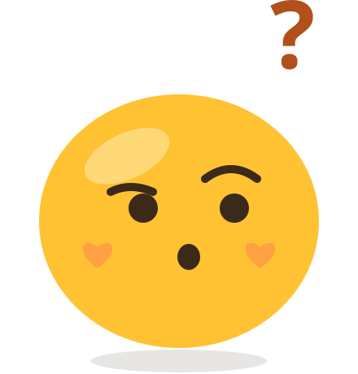

어떰?
이용이 정지된 계정이에요. 조회만 할 수 있어요
{{ title }}
{{ subTitle }}
오늘은 어떤 고민에
답장해볼까요?
지금 인기
0{{ h.rank }}
{{ h.text }}
{{ h.total }}명 참여 중
새 고민
최신순
{{ c.t }}

아직 {{ fcat }} 고민이 없어요
전체 보기
{{ p.cat }}
· {{ p.total }}명 참여
{{ p.pillT }}
{{ p.text }}
더 보기
마지막 고민이에요
없거나 삭제된 고민이에요
다른 고민에 답장해볼까요?
홈으로
{{ cur.cat }}
· {{ cur.total }}명 참여
· {{ cur.dl }}
{{ cur.text }}
마감된 고민이에요. 새로 참여할 수 없고 결과는 누구나 볼 수 있어요
하나 골라 답장하면 결과가 보여요
{{ o.t }}
내 답장
{{ cur.mine }}
{{ cur.total }}명은 이렇게 답했어요
{{ o.t }}
내 답장
{{ o.pct }}
%
제출한 답장은 바꿀 수 없어요
{{ textLen }}/500
카테고리
하나만
{{ c.t }}
선택지
2~5개 · 각 50자
+ 선택지 추가
마감
선택 · 없으면 계속 참여할 수 있어요
{{ d.t }}
· {{ e }}
올리면 바로 공개돼요. 올린 뒤에는 수정할 수 없고 삭제만 할 수 있어요.
로그인하지 않으면 이 브라우저에서 한 참여만 보여요
아직 답장한 고민이 없어요
홈에서 하나 골라볼까요?
{{ m.text }}
내 답장
{{ m.mine }}
{{ m.pct }}%
고민을 올리려면
로그인이 필요해요
카카오로 시작하기
아직 올린 고민이 없어요
가운데 + 버튼으로 첫 고민을 올려봐요
{{ m.cat }}
· {{ m.total }}명 참여
{{ m.state }}
{{ m.text }}
{{ nick }}
{{ roleLine }}
로그인하면 내 고민을
올릴 수 있어요
카카오로 시작하기
투표는 로그인 없이도 할 수 있어요
{{ s.n }}
{{ s.l }}
관리자 · 신고 검토
{{ pendingCount }}건 대기 ›
이용약관 · 개인정보 처리방침
로그아웃
탈퇴하기
프로토타입 보기 전환
{{ r.t }}
접수된 신고가 없어요
{{ r.reason }}
{{ r.status }}
{{ r.text }}
신고 사유 · {{ rep.reason }}
“{{ rep.etc }}”
대상 고민 · {{ rep.cat }} · {{ rep.total }}명 참여
{{ rep.text }}
신고 건수만으로 자동 처리되지 않아요. 상태
{{ rep.status }}
{{ banMark }}
작성자 이용 정지도 함께
기각 · 투표 유지
숨김 (복구 가능)
삭제 (복구 불가)
이미 처리된 신고예요. {{ rep.history }}
이 답장 보내기
제출한 답장은 바꿀 수 없어요
고민 올리기
{{ toast }}
{{ t.t }}
로그인하고
내 고민을 올려봐요
투표와 결과 보기는 로그인 없이도 할 수 있어요
카카오로 시작하기
나중에 할게요
처음이시네요!
약관만 확인할게요
(필수) 이용약관
(필수) 개인정보 수집·이용
동의하고 시작하기
내 고민 삭제하기
이 고민 신고하기
닫기
이 고민을 삭제할까요?
삭제하면 복구할 수 없어요. 참여 기록은 보존돼요.
취소
삭제
신고 사유를 골라주세요
{{ r.t }}
신고하기
관리자가 검토해요. 처리 결과는 따로 알려드리지 않아요
정말 탈퇴할까요?
올린 고민은 작성자 없이 남고, 투표 기록은 보존돼요. 같은 카카오 계정으로 다시 가입하면 새 계정으로 시작해요.
취소
탈퇴